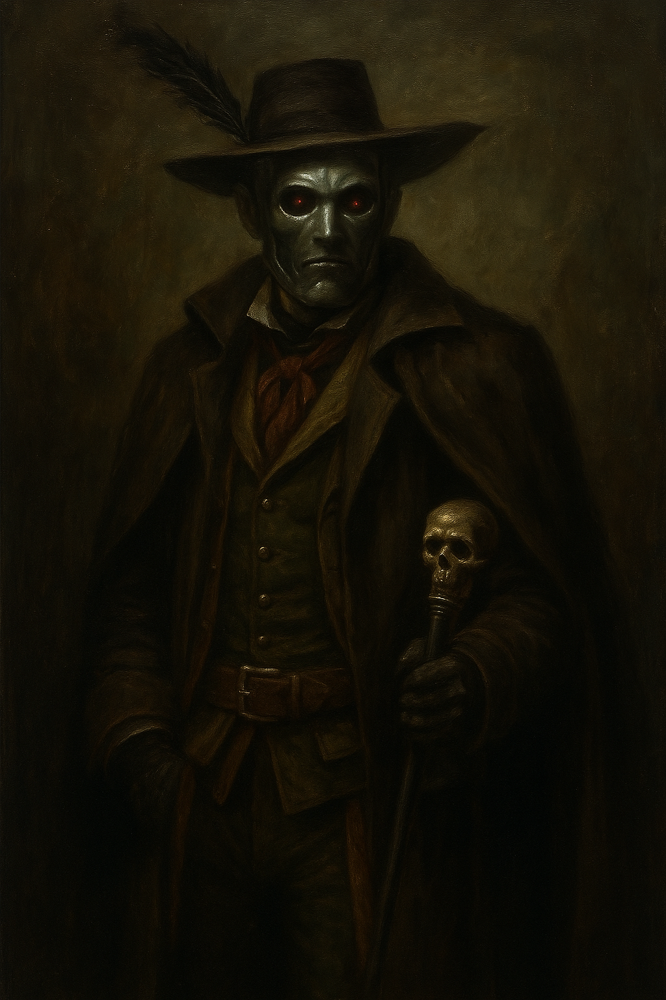

A la pourssuite du loup noir
Presentation
Claire avait gagné contre son ennemie c'est du moins ce que tous pensaient, mais était elle vraiment morte ? Claire était persuadée qu'elle était morte bien trop facilement, et qu'en réalité elle se jouait juste d'elle. Mais si c'était vrai pourquoi avait-elle fait semblant d'être vaincu ? A quoi sa pouvais bien lui servir ?
Extrais
Le crépuscule commençait à tomber sur la capital royal, les enfants crié de peur que la nuit ne dure encore plusieurs mois. Mais tout bruit cessa quand retentis des bruit de clochette, les mère rappelèrent immédiatement les dernier enfant encore dehors. Les ivrognes ont immédiatement dégrisés en voyant Piètro, et sa suite de marionnette dansante. Un homme trop ivre pour reconnaître Piètro le percuta, Piètro posa sa main droite sur l'homme sans lui avoir jeté le moindre regard. A peine l'avait il posait, qu'il la retira. Tandis qu'il essuyait sa mains droite, l'homme se mit à danser à l'arrière de la suite de marionnette. Aucun garde ne sinterpossa, tous regarder le groupe approcher du palais royal avec crainte. Claire étais sortie devant sa résidence, ceux qui étaient censés la protéger avait préféré se retrancher dans la résidence. Tous fure étonné quand Il tourna dans l'allée de la résidence de Claire, il tendi un bouquette de rose rouge envelopper dans un tissue noir de grande qualiter. Il lui dit. “J'ai un collègue qui serait ravie d'adapter tout ça en pièce de théâtre, il manque juste un dénouement tragique.” Quand Claire se saisit du bouquet, elle effleura sans faire exprès les doigts de Pietro, ce qui la fit trembler de peur. Piètro dit en enlevant de ses mains. “Il y a en ce monde des astres que ma princesse, que dis je ? Ma reine refuse que j'éteigne. ” Il commença à partir sur l'avenue centrale, arrivé au portail, il s'arrêta un court instant et tourna la tête vers Claire et lui dit. “Si j'étais vous je ne serais pas en retard, qui sais ce que ma reine pourrais faire si vous l'étiez.” Puis il repartit gréement, vers les bas fond toujours escorté par sa suite dansante.
Personnage
Leonad
L'un des généraux de l'armée des monstres, il est aussi le collègue de Piètro. C'est un dramaturge dans l'âme. Il se consacre d'ailleurs plus à l'écriture de pièces de théâtre qu'à son rôle de général.
Piètro
Fidèle général, il est généralement d'humeur joyeuse. Mais mieux vaut ne pas l'énerver.
Claire
La protagoniste de la première nouvelle. Elle est l'une des meneuse qui c'est le plus illustrés pour la défense de la coalition humaine, contre les attaques de monstres. Elle fut isser au rend d'héroïne après sa victoire contre la meneuse ennemit, célébre loup noir.